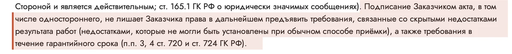
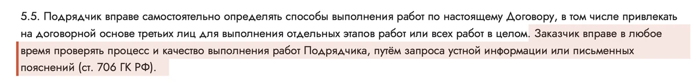

Шапка «Брак спрячут под отделкой» — 10 вариантов
Страх: каркас и утепление сделают плохо, а под обшивкой этого не видно. Каждая шапка отвечает фактом — пунктом договора, шагом со страницы «Как заказать» или настоящим роликом. Текст стоит на сплошном цвете или плотном затемнении.
Советую: 3 — вырезка из договора: право на претензию и после акта; 1 — вопрос клиента и ответ фактами с настоящим роликом; 5 — путь стройки с тремя проверками.
Вопрос клиента — ответ фактами
- Идея
- Страх словами клиента в «пузыре», ответ — три факта: каркас проверяют до обшивки, каждый этап вы принимаете по акту, скрытый недостаток можно предъявить и после акта. Справа — настоящий ролик про слои, которые потом закроют. Источники: «Как заказать», шаг 12; п. 6.1 и 6.3; «Как строим → Кровля».
- Почему продаёт
- Человек узнаёт свой страх и сразу видит ответ, который можно проверить. Ролик показывает то, чего не видно в готовом доме.
- Риск
- «Пузырь» могут принять за цитату клиента — это формулировка страха, а не отзыв. Проверка каркаса по чек-листу описана на сайте, в договоре её нет.
«А брак не спрячут под обшивкой?»
Обшивку начинаем после проверки каркаса
- шаг 12Каркас проверяют по чек-листу. Пока этап не принят, дальше не идём
- п. 6.1Каждый этап стройки вы принимаете по акту
- п. 6.3Скрытый недостаток можно предъявить и после подписания акта
Видео: ветрозащита и гидроизоляцияЭти слои не видно в готовом доме, поэтому показываем на стройке
Зачёркнутый страх и пункт договора
- Идея
- Слева зачёркнуто то, чего боятся, справа — что на этот случай записано в договоре. Источники: п. 6.3, 6.4 и 9.4.
- Почему продаёт
- Контраст снимает страх за секунды: человек видит, что его случай уже предусмотрен. Спорим со страхом, а не с другими компаниями — никого не ругаем.
- Риск
- Зачёркнутые фразы не должны выглядеть как слова реальных клиентов. Условие экспертизы по п. 9.4 — платит тот, кто неправ, — кого-то насторожит.
Боитесь, что брак закроют обшивкой? Сверьте с договором
На каждый такой страх в договоре уже есть пункт. Его можно прочитать до встречи.
- Боятся
Стены закроют — и уже ничего не докажешьВ договореп. 6.3Требования по скрытым недостаткам можно предъявить и после подписания акта
- Боятся
Замечания выслушают и забудутВ договореп. 6.4Дефекты и сроки исправления фиксируют актом за подписью сторон. Устраняем за 5 рабочих дней
- Боятся
Спор о качестве — слово против словаВ договореп. 9.4Спор о качестве решает независимая экспертиза. Её оплачивает тот, кто окажется неправ
Фрагмент договора: претензия после акта
- Идея
- Главный ответ на «спрячут» — вырезка из самого договора: подписанный акт не лишает права предъявить требования по скрытым недостаткам. Под ней — приёмка каждого этапа и 5 рабочих дней на устранение. Источники: п. 6.3 (img/dogovor-p6-3.webp), 6.1, 6.4.
- Почему продаёт
- Документ убеждает сильнее обещания: видно, что это текст, который подпишут, а не реклама. Снимает мысль «закроют стены — потом ничего не докажешь».
- Риск
- Юридический текст мелкий: на телефоне читается подпись над вырезкой, а не сама вырезка. Слова «скрытые недостатки» напоминают о браке — поэтому рядом приёмка и сроки.
Акт подписан — право на претензию осталось
Требования по скрытым недостаткам можно предъявить и после подписания акта — и в течение гарантийного срока.

Четыре цифры о скрытых работах
- Идея
- Крупные цифры с подписью источника: три проверки по чек-листу, 5 рабочих дней на устранение недостатков, гарантия 2 года на каркас, утеплитель и мембраны, 30 дней на устранение по гарантии. Источники: «Как заказать», шаги 12, 15, 17; п. 6.4, 7.6, 7.8.
- Почему продаёт
- Цифры замечают даже те, кто пролистывает страницу. У каждой — источник, поэтому они не выглядят рекламой.
- Риск
- «2 года» рядом с чужими большими сроками может проиграть — поэтому гарантия стоит вместе со сроком устранения. Три проверки — факт сайта, а не договора.
Что под обшивкой — отвечаем цифрами
Путь стройки с тремя проверками
- Идея
- Стройка по шагам: каркас, кровля и фасад, утепление и отделка — после каждого проверка по чек-листу, в конце вы принимаете дом. Источники: «Как заказать», шаги 11–18; п. 6.1 и 6.3.
- Почему продаёт
- Показывает механизм, а не обещание: каркас проверяют до того, как его закроют обшивкой. Понятно без слов «качество» и «надёжность».
- Риск
- Проверки описаны на странице «Как заказать», в договоре их нет. Если порядок проверок поменяется, шапку придётся поправить.
Три проверки по чек-листу, прежде чем звать вас на приёмку
- 1КаркасПроверка 1
По чек-листу и нормам. Есть замечания — бригада переделывает
- 2Кровля и фасадПроверка 2
Тот же чек-лист. Замечания устраняем до приёмки этапа
- 3Утепление и отделкаПроверка 3
Последняя проверка до вас
- ✓Сдача домаВаша приёмка
Принимаете дом по акту. Скрытые недостатки можно предъявить и после — п. 6.3
Пока этап не принят, дальше не идём«Как заказать», шаг 12
Ролики тех, кто принял дом
- Идея
- Три настоящих ролика с главной: хозяева, которые приняли работу, хозяин, который живёт в доме круглый год, и клиент, смотревший дом в стройке. Подписи — как на сайте. Источники: главная, раздел «Отзывы»; «Как заказать», шаг 3.
- Почему продаёт
- Людям верят больше, чем компании. Ролик «Смотрел дом в стройке» отвечает на страх про то, что внутри стен.
- Риск
- Ролики не обязательно говорят о скрытых работах — подписи этого не обещают. Нужно согласие клиентов на показ на первом экране.
Спросите тех, кто уже принял дом
Ролики снимали сами клиенты — после сдачи дома и после поездки на объект. На строящемся доме можно поговорить с хозяевами и бригадой.
- Отзыв клиента 3Дом сдан, хозяева приняли работу
- Видеоотзыв 3Смотрел дом в стройке
- Отзыв клиента 1Дом сдан, живёт круглый год
Проверьте сами
- Идея
- Три способа проверить: материалы вживую в офисе, строящийся дом с хозяевами и бригадой, вопросы о ходе и качестве работ в любое время. Внизу — вырезка из договора. Источники: «Как заказать», шаг 3; адрес — главная; п. 5.5 (img/dogovor-p5-5.webp).
- Почему продаёт
- Приглашение проверить говорит «прятать нечего» сильнее любых слов о качестве.
- Риск
- По п. 5.5 проверка — это запрос устной информации или письменных пояснений, а не выезд на свою стройку в любой день. Так и написано — не усиливать.
Проверьте нас сами — до договора и во время стройки
Материалы, из которых соберут стены, можно увидеть до договора, а ход работ — проверять во время стройки.
Москва, ул. Адмирала Корнилова, 66, стр. 20. По записи
Посмотрите стройку и поговорите с хозяевами и бригадой
Спрашивайте о ходе и качестве работ — ответим устно или письменно

Что обещаем и что нужно от вас
- Идея
- Две половины: слева обещания по договору, справа — условия для клиента: 5 рабочих дней на приёмку этапа, правила гарантии, экспертиза при споре. Источники: п. 6.1, 6.3, 6.4, 7.6, 7.7, 9.4.
- Почему продаёт
- Честные условия вызывают доверие: видно, что договор защищает обе стороны, а условия не прячут на потом.
- Риск
- Правая половина может отпугнуть тех, кто ждёт простого «всё сделаем». Шапка тяжелее остальных — ей место скорее на странице «Гарантии».
Честно о приёмке: что обещаем и что нужно от вас
Обещаем по договору- 6.1Сдаём по этапам — каждый вы принимаете по акту
- 6.4Недостатки из акта устраняем за 5 рабочих дней
- 6.3Скрытые недостатки можно предъявить и после подписания акта
- 7.6Гарантия 2 года: каркас, утеплитель, мембраны, обшивка стен
- 6.3Принять этап или прислать письменные замечания за 5 рабочих дней. Иначе этап считается принятым
- 7.7Не менять конструкцию без письменного согласования и раз в год осматривать кровлю и фасад
- 9.4Спор о качестве — через независимую экспертизу. Её оплачивает тот, кто окажется неправ
Чертёж каркаса уже в цене
- Идея
- Ценность сверх ожиданий: каркас собирают по конструктивному проекту с чертежами узлов, бригадир разбирает проект до стройки, а проектная документация за 40 000 ₽ уже в цене. Обложка — настоящий ролик. Источники: «Как строим → Конструктивный проект»; п. 2.8.
- Почему продаёт
- Страх брака — это страх стройки «на глаз». Чертёж узлов и сечений отвечает на него и заодно показывает, за что платят.
- Риск
- «40 000 ₽ в цене» может стоять и на странице про «Дорого» — не повторить заголовок. В п. 2.8 — проектная документация с проверкой конструктивных решений; формулировку не расширять.
Каркас собирают по чертежу. Чертёж уже в цене
- На каждый дом — конструктивный проект: расчёт снеговых и ветровых нагрузок, чертежи узлов, сечения и шаг стоек
- Бригадир разбирает ваш проект до начала работ — на участке не додумывают
- Проект с проверкой конструктивных решений стоит 40 000 ₽ и уже входит в цену — п. 2.8
40 000 ₽проект уже в ценеп. 2.8
Первый слайд — новый текст
- Идея
- Нынешний слайдер не трогаем, меняем только текст первого слайда: вместо срока и фразы про цену — приёмка каждого этапа и право на претензию после акта. Источники: п. 6.1, 6.3; «Как заказать», шаг 12.
- Почему продаёт
- Самая быстрая правка: дизайн привычный, а на первом экране уже ответ на страх, который мешает оставить заявку.
- Риск
- На первом слайде помещается одно возражение из пяти. Если поставить сюда «брак», про сроки и цену нужно ответить ниже по странице.
Каркасные дома под ключ с приёмкой каждого этапа
Каркас обшиваем только после проверки. Скрытые недостатки можно предъявить и после подписания акта — п. 6.3.